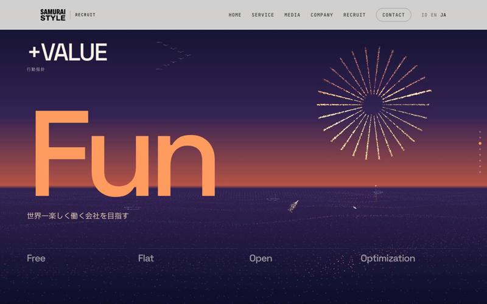
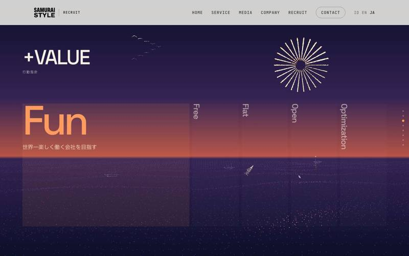
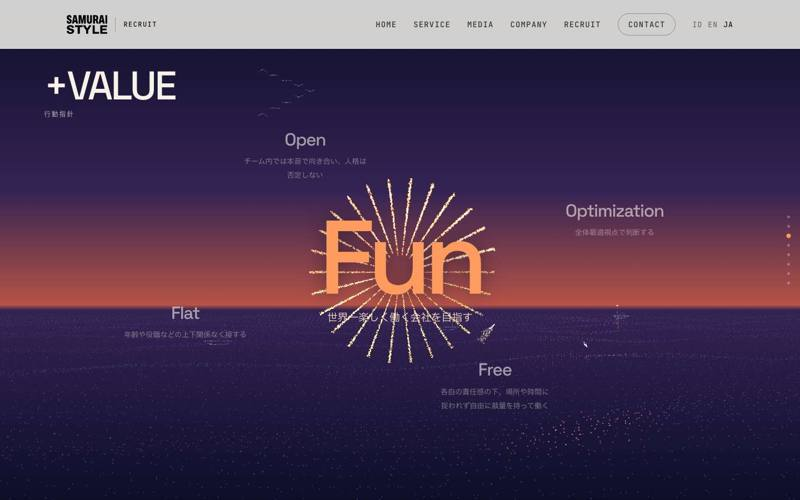
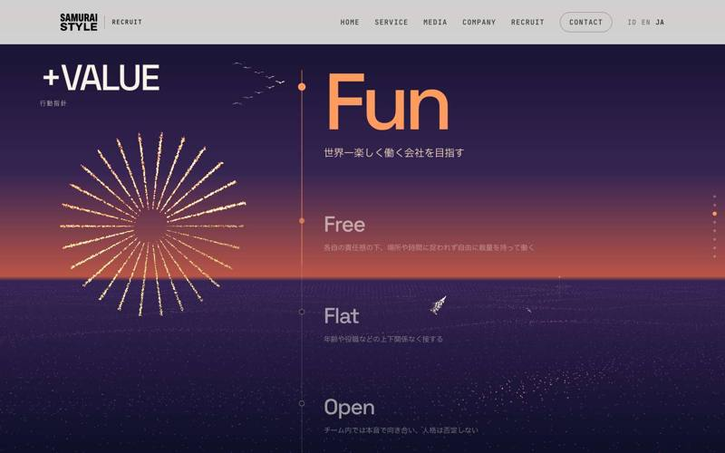

土台は v3。案 N の VALUE と構成 N を同じページに当てています（組み合わせは自由）。花火は4案とも、沖の台船から打ち上がって空で開き、水面に映ります。
アイコンではなく、5つの並べ方そのものを変えた4案
見出しの下に Fun を画面幅いっぱいの特大文字で。下の1列で4つが順に入れ替わり、呼ばれた語だけ説明が出る

案2 5枚の札・Fun だけ開く5つを横に並べた札。Fun の札だけ大きく開いていて、ほかは縦書きの細い札。順番が来た札が開く

案3 Fun を中心に4つが回る真ん中に Fun。Free・Flat・Open・Optimization が周りをゆっくり回る（スマホは縦に並べる）

案4 縦の流れFun が流れの源。下へ4つが続き、スクロールに合わせて左の線が朱に満ちていく

写真は外し、遠くの海の花火を主役にした4つの構成